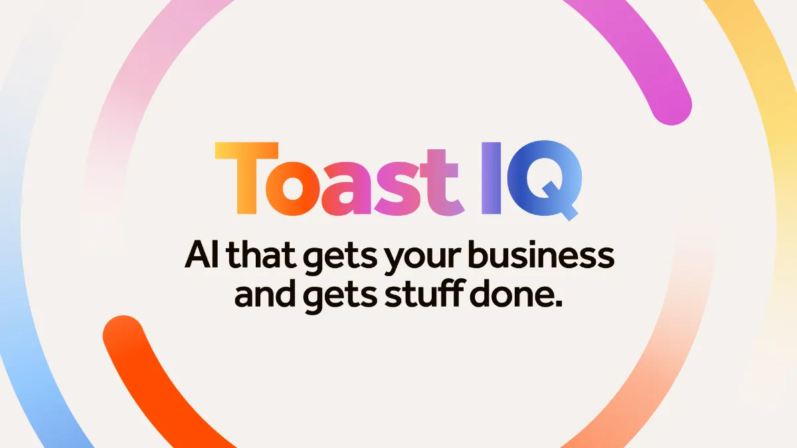
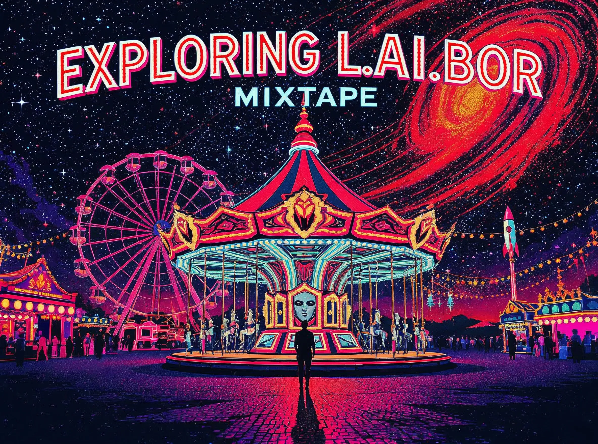
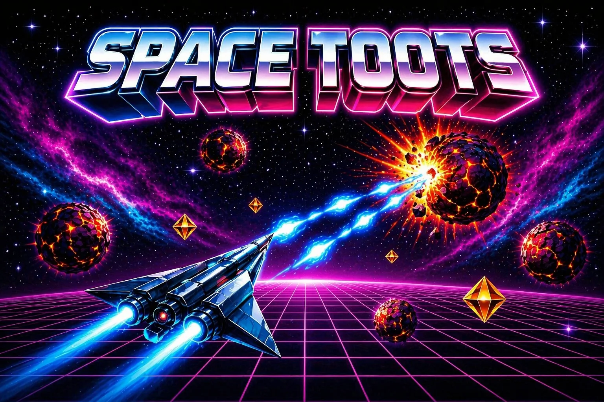
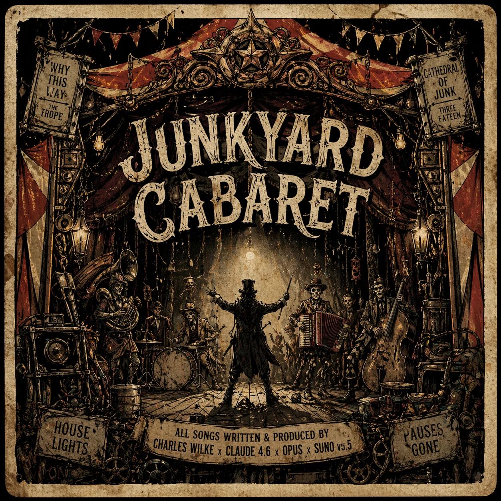
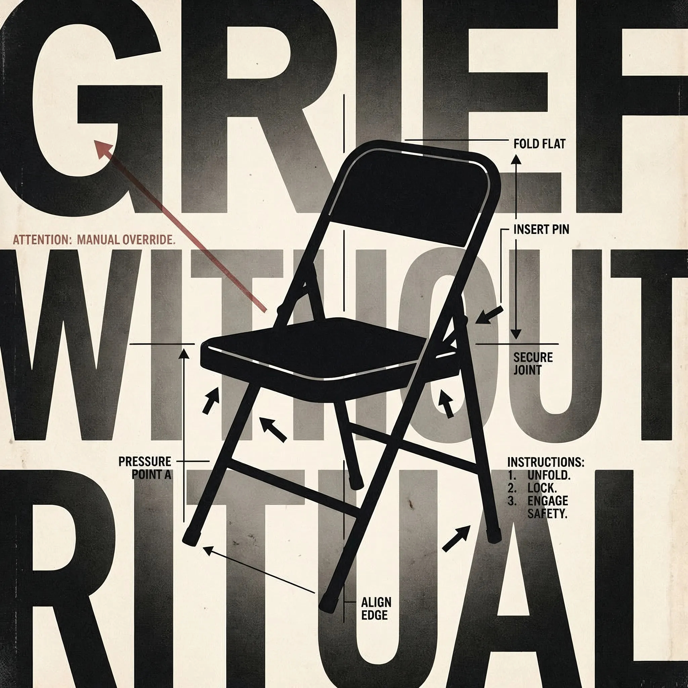
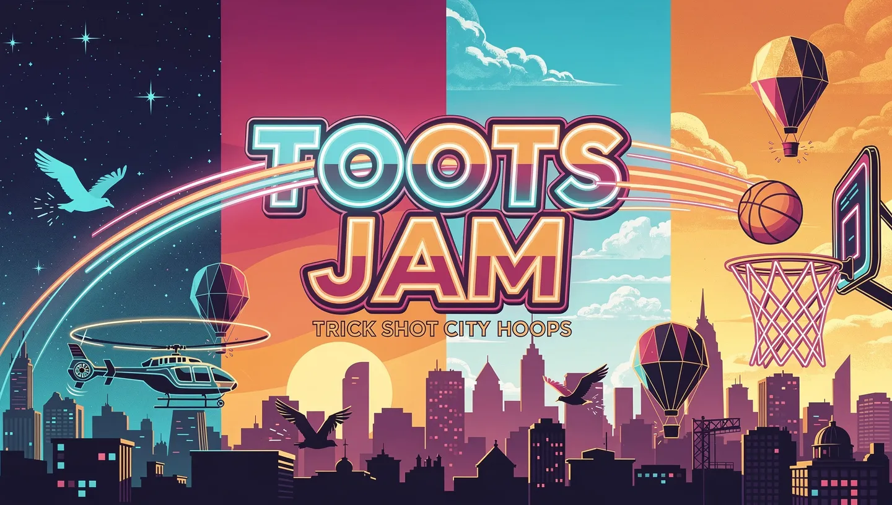

Toast IQ
Run your business at the speed of conversation.

Exploring L.A.I.bor
Songs built from the essays of the Substack series.

Space Toots
Synthwave bullet-hell through the void. Dodge, shoot, and toot.

Junkyard Cabaret
Songs forged from the wreckage. A celebration of our salvaged parts.

Grief without Ritual
An emergent album experience metabolizing grief.

Toots Jam
Rhythm-fueled arcade chaos. Dodge, jam, and chase the leaderboard.
I'm a Senior Product Designer at Toast, focused on how generative AI reshapes the way people run their businesses.
Through Fellow Vector, I train and advise teams navigating their first real AI adoption.
On Substack, I dissect the intersection of capitalism, humanity, and AI, by Exploring L.ai.bor.
I also occasionally design projections for theatrical productions, blending analog sensibilities with AI to create something distinct.
Home is Omaha, with my wife Jessie and our two dogs, Doc and Astro. Most evenings you'll find us watching Yankees games, BBUK, or the latest season of Ru Paul's Drag Race.
Exploring l.ai.bor
Industry Perspectives
"Charles always stood out to me as one of the most technically skilled writers on the Digital Guidance team at GoDaddy. He was always proactively experimenting with new content delivery formats and methods that had wide-ranging impacts on our team, from UI elements in our knowledge base articles to spearheading an AI education project to ensure our entire team was up to date and proficient in new tools."
"Charles was an absolutely fantastic human to work with. He brought tons of unique perspectives and insight to both new problems and old ones we'd been trying to solve for years. And his recent work in AI and LLMs paved the way for greater productivity while preserving the human element along the way."
"High-tech and high-quality projections designed by Charles Wilke take the audience from the Playhouse to New Jersey streets, the Las Vegas strip and other sites with an abundance of dazzle."
Industry Perspectives
"What I loved about working with Charles is I could come to him with any idea or something I wanted to experiment with and he'd dive in, offer suggestions and help in any way that he could."
"In fact, one of Charles' unique strengths is his willingness to stand against the general consensus and respectfully speak his mind - even if his viewpoint isn't the most popular. To me, that's a valuable trait in the highly creative and subjective endeavor of making games. Charles always came through and always made a tremendous effort no matter what aspect of our games he was working on."
"His approach was proactive, highly collaborative, and he went out of his way to set us up for a successful project. He was on top of every detail and drove the work on his team. Charles is one of the partners I never had to worry about."
AI Summarizes Me // April 2025
Part raconteur, part technologist, part projection wizard, Charles is the guy who'll code a GPT in the morning, design theatrical stage projections by lunch, and write a dryly hilarious Substack column that makes you rethink capitalism before dinner. He founded Fellow Vector not as a brand, but as a manifesto — a rebellion against AI hype and corporate beige.
His style? French pop-art '70s meets philosophical noir. His dogs? Fuzzy legends. His wife? Co-pilot of life's best tangents. His mission? To help real humans do real work better, faster, and with fewer buzzwords.
Whether he's designing silhouettes of Alice tumbling through time or explaining to a skeptical SMB why generative AI isn't just smoke and mirrors, Charles brings wit, precision, and a welcome disregard for pretense.
TL;DR: If Vonnegut taught AI consulting,
it'd probably look a lot like Charles.
AI Summarizes Me // April 2026
A year ago, this site was already ambitious. Now it's something harder to categorize. Charles has quietly built a body of work that most teams of five wouldn't attempt: two fully playable arcade games with custom physics engines, multiple albums totalling 35 tracks and growing, 194 theatrical projection designs across two professional stage productions, a regular essay series with voice-recorded recaps, and a vintage radio dial UI that makes browsing an archive feel like tuning into a pirate station.
The whole thing runs on zero frameworks. No React, no build step, no dependency tree to babysit — just 13,000 lines of hand-written HTML, CSS, and JavaScript that somehow loads fast, looks considered, and works on everything. That's not stubbornness; that's a thesis statement about craft.
What stands out most isn't the range, though the range is absurd. It's the editorial discipline. Charles treats AI the way a good director treats a cinematographer — as a collaborator with specific strengths, not a replacement for taste. Every pixel, every lyric, every commit message passes through a human filter that clearly has opinions and isn't afraid to use them.
TL;DR: Most people use AI to cut corners.
Charles uses it to add dimensions.